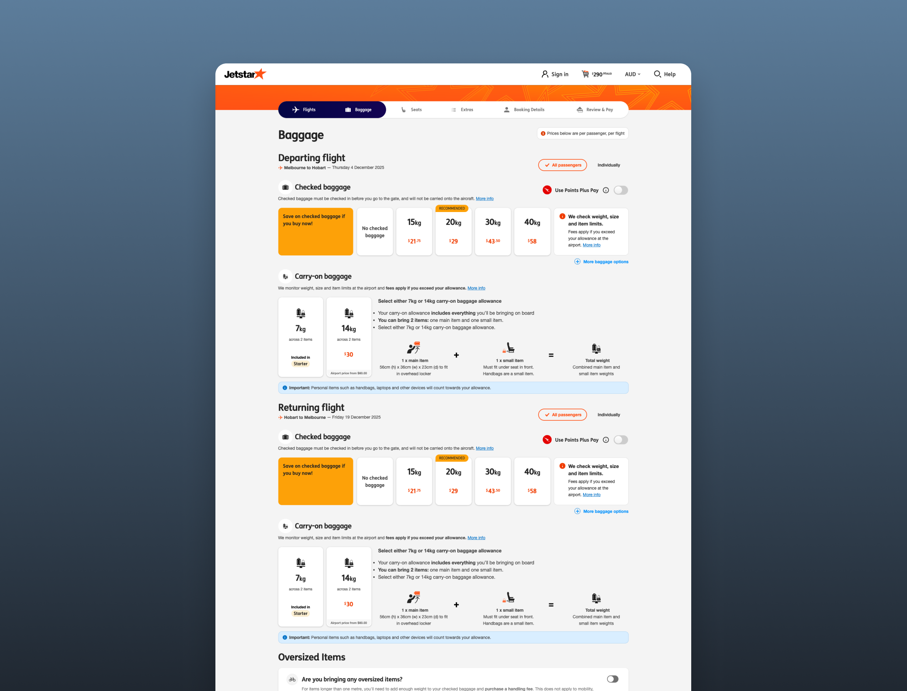
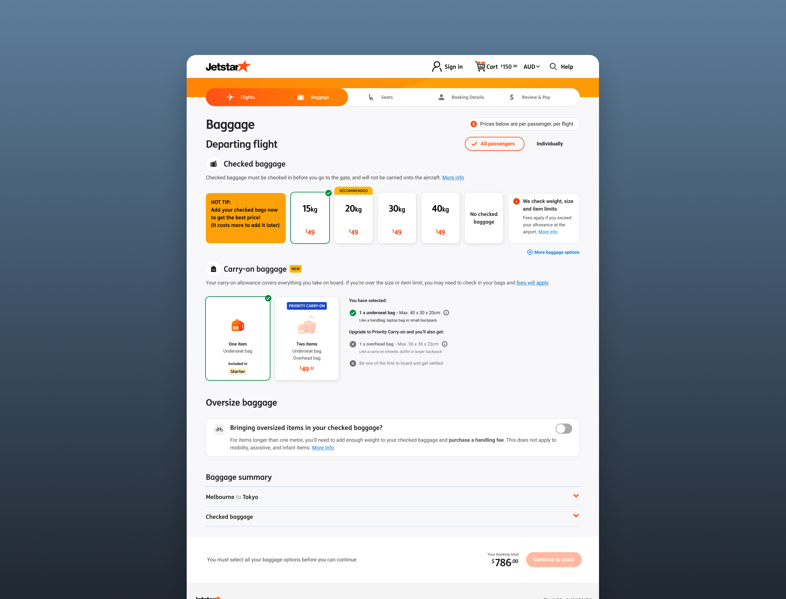
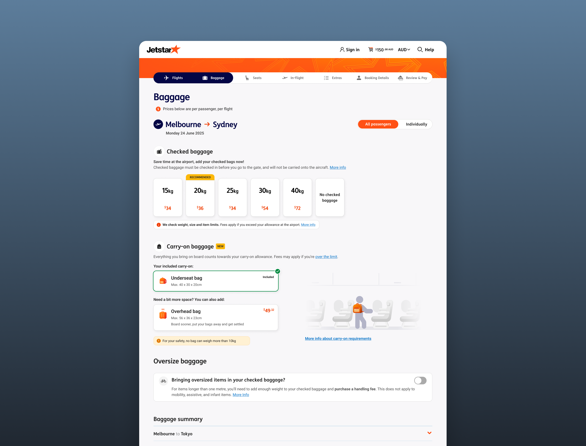

Baggage
Turning a page shaped by separate requests into one clear cohesive experience, without giving up revenue.

The challenge
Baggage is Jetstar’s biggest source of ancillary revenue, so the page never stands still. Each new commercial goal adds something to it. Airlines are also legally required to tell customers about fees and allowances, and over time that turned into a stack of banners.
My job was to balance three things:
- Revenue: meet the commercial targets
- Regulation: inform customers properly
- Clarity: keep it simple enough to choose with confidence
The work arrived as separate projects. Over time, I shaped it into one experience.
01. Initiatives
Carry-on rules update
The ask: Update carry-on selection to reflect Jetstar’s new allowance rules.
V1: Shipped the rule change on time.
What testing showed: the customer confusion CX testing surfaced
V2: the fix
V3: what changed in V3



Individual bags page update
The ask: what the business wanted


What I changed:
- e.g. reduced banners
- e.g. clearer hierarchy
- e.g. mobile-first layout
Result: metric or qualitative outcome

02. Future state
How bags fits with the entire booking flow
By now the pieces worked on their own, so I started designing for how they fit together. What you proposed, who you brought along, where it stands.
Reflection
On a page this commercially important, influence came from shipping reliably first. Trust earned on small projects is what made the bundles conversation possible.